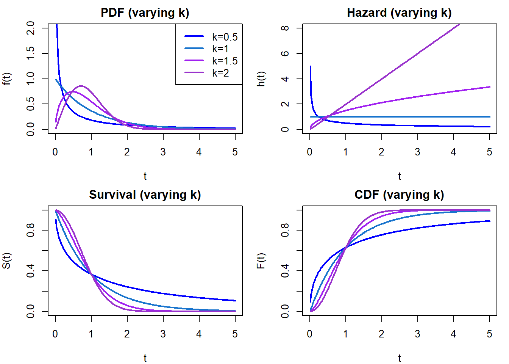
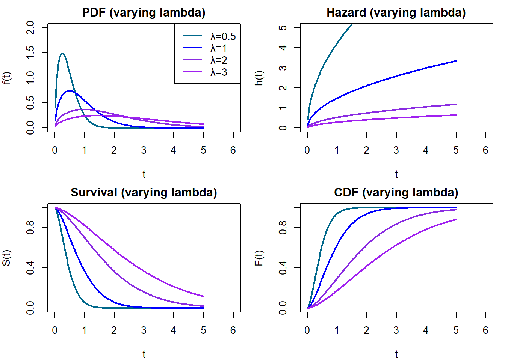

Parametric survival modeling with censoring via the Weibull distribution
Author
Chris Cahill
Description of files
‘weibull_play.R’ shows some simple ways to simulate and estimate Weibull data
‘compare.R’ shows relationships between accelerated failure time and log hazard parameterizations of the Weibull model
Introduction
This document derives and implements the Weibull log-likelihood with optional right censoring. We walk through the probability density function (PDF), survival function, cumulative hazard, and the full log-likelihood step-by-step, with algebraic derivations and interpretation. We also demonstrate this with simulated data. Much of this document comes from the Weibull distribution (see Wikipedia) and the first 100 pages of Paul Allison’s Survival Analysis using SAS book.
1. Weibull Probability Density Function (PDF)
The Weibull distribution can parameterized by shape \(k\) and scale \(\lambda\):
Both \(k\) and \(\lambda\) must be > 0 for the Weibull distribution. In terms of interpretation, \(k\) can be thought of as modulating the risk or hazard of an event happening through time while \(\lambda\) modulates the horizontal stretch of the distribution.
For example, if \(k\) < 1.0, some fish leave quickly while others linger. If \(k\) = 1.0, it means there is a constant hazard through time (i.e., this is an exponential model). If \(k\) > 1.0, the hazard increases through time so fish are more likely to leave as time goes on. In this case, \(k\) can be thought of as describing the risk profile of fish.
For \(\lambda\), higher values mean fish tend to move or transition later, all other things being equal. It describes the timing of movement events.
We simulate a bunch of distributions below to visualize this, but first we’ll walk through some important math involving the Weibull and derive a loglikelihood for censored data.
2. Deriving the Cumulative Distribution Function (CDF)
\[
\log h(t) = \log k - \log \lambda + (k - 1) \log t
\]
This is equivalent to:
\[
\log h(t) = a + b \log t
\]
Where:
\((a = \log k - k \log \lambda)\)
\((b = k - 1)\)
6. Cumulative Hazard Function
We need the cumulative hazard function H(t) because it captures the total risk of failure accumulated up to time t. This is important even for censored observations, since knowing that someone survived up to a certain point still provides useful information.
The cumulative hazard can be derived by taking the integral of the hazard function and in our case is:
\(\log h(t_i)\): Only contributes when the event is observed \(d_i = 1\). It reflects the instantaneous risk.
\(-H(t_i)\): Always contributes. It reflects the probability of surviving up to time \(t_i\).
Together, they form the complete log-likelihood for censored survival data.
9. Simulating Weibull Distributions
# --- panel 1: varying shape, fixed scale ---set.seed(123)k_vals <-c(0.5, 1, 1.5, 2)lambda_vals <-rep(1, length(k_vals))colors <-c("blue", "dodgerblue3", "purple", "darkorchid")times <-seq(0.01, 5, length.out =200)par(mfrow =c(2, 2), mar =c(4, 4, 2, 1))# PDFplot(NULL, xlim =c(0, 5), ylim =c(0, 2), xlab ="t", ylab ="f(t)", main ="PDF (varying k)")for (i inseq_along(k_vals)) {lines(times, dweibull(times, shape = k_vals[i], scale = lambda_vals[i]), col = colors[i], lwd =2)}legend("topright", legend =paste0("k=", k_vals), col = colors, lwd =2)# Hazardplot(NULL, xlim =c(0, 5), ylim =c(0, 8), xlab ="t", ylab ="h(t)", main ="Hazard (varying k)")for (i inseq_along(k_vals)) { h <- (k_vals[i] / lambda_vals[i]) * (times / lambda_vals[i])^(k_vals[i] -1)lines(times, h, col = colors[i], lwd =2)}# Survivalplot(NULL, xlim =c(0, 5), ylim =c(0, 1), xlab ="t", ylab ="S(t)", main ="Survival (varying k)")for (i inseq_along(k_vals)) { S <-exp(-(times / lambda_vals[i])^k_vals[i])lines(times, S, col = colors[i], lwd =2)}# CDFplot(NULL, xlim =c(0, 5), ylim =c(0, 1), xlab ="t", ylab ="F(t)", main ="CDF (varying k)")for (i inseq_along(k_vals)) { F <-1-exp(-(times / lambda_vals[i])^k_vals[i])lines(times, F, col = colors[i], lwd =2)}

# --- panel 2: varying scale, fixed shape ---lambda_vals2 <-c(0.5, 1, 2, 3)k_vals2 <-rep(1.5, length(lambda_vals2))colors2 <-c("deepskyblue4", "blue", "blueviolet", "purple")par(mfrow =c(2, 2), mar =c(4, 4, 2, 1))# PDFplot(NULL, xlim =c(0, 6), ylim =c(0, 2), xlab ="t", ylab ="f(t)", main ="PDF (varying lambda)")for (i inseq_along(lambda_vals2)) {lines(times, dweibull(times, shape = k_vals2[i], scale = lambda_vals2[i]), col = colors2[i], lwd =2)}legend("topright", legend =paste0("λ=", lambda_vals2), col = colors2, lwd =2)# Hazardplot(NULL, xlim =c(0, 6), ylim =c(0, 5), xlab ="t", ylab ="h(t)", main ="Hazard (varying lambda)")for (i inseq_along(lambda_vals2)) { h <- (k_vals2[i] / lambda_vals2[i]) * (times / lambda_vals2[i])^(k_vals2[i] -1)lines(times, h, col = colors2[i], lwd =2)}# Survivalplot(NULL, xlim =c(0, 6), ylim =c(0, 1), xlab ="t", ylab ="S(t)", main ="Survival (varying lambda)")for (i inseq_along(lambda_vals2)) { S <-exp(-(times / lambda_vals2[i])^k_vals2[i])lines(times, S, col = colors2[i], lwd =2)}# CDFplot(NULL, xlim =c(0, 6), ylim =c(0, 1), xlab ="t", ylab ="F(t)", main ="CDF (varying lambda)")for (i inseq_along(lambda_vals2)) { F <-1-exp(-(times / lambda_vals2[i])^k_vals2[i])lines(times, F, col = colors2[i], lwd =2)}

This simulation visualizes how the Weibull distribution behaves under different shape values with a fixed scale. Shape \(k < 1\) leads to decreasing hazard, \(k = 1\) gives constant hazard (exponential), and \(k > 1\) gives increasing hazard.
8. R Implementation (Log-Likelihood Function)
This is an implementation I built for use with e.g., optim():
nll_loghaz_shape_scale <-function(par, t, d) { k <-exp(par[1]) lambda <-exp(par[2]) a <-log(k) - k *log(lambda) b <- k -1 logt <-log(t) eta <- a + b * logt h <-exp(eta) # hazard function h(tᵢ) H <-exp(a) * t^(b +1) / (b +1) # cumulative hazard H(tᵢ) ll <- d *log(h) - H # full log-likelihoodreturn(-sum(ll)) # return negative log-likelihood}
This then represents an estimation problem and the various tools used with maximum likelihood estimation can be used for inference.